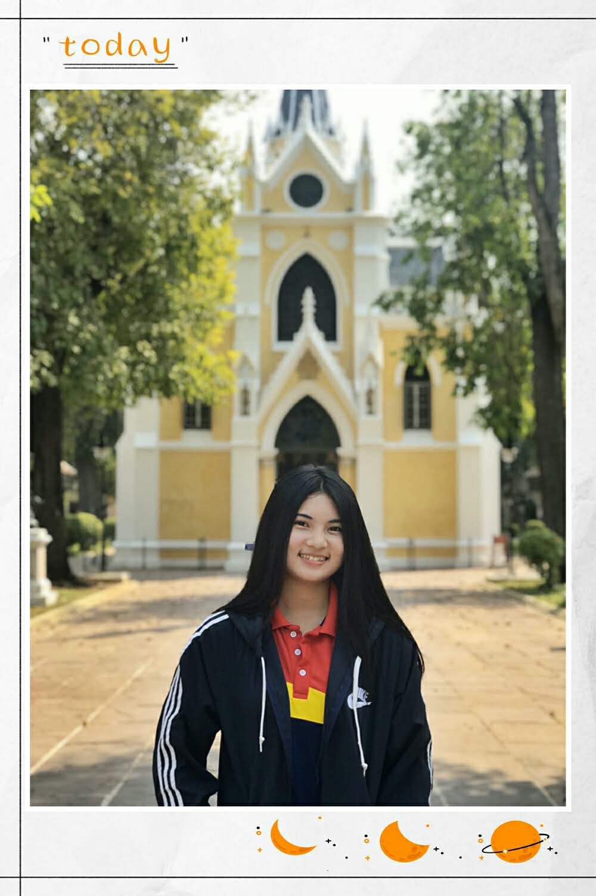
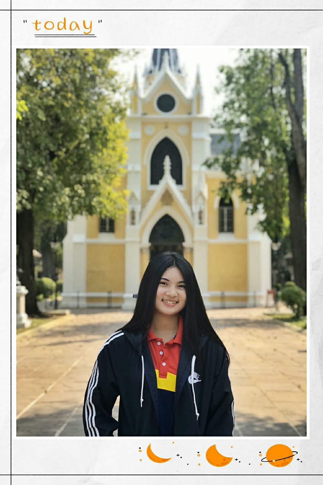

Welcome to Wat Niwet Thammaprawat
"ยินดีต้อนรับสู่การท่องเที่ยวในจังหวัดพระนครศรีอยุธยา อ.บางปะอิน " " วัดนิเวศธรรมประวัติราชวรวิหาร " สวัสดี ชื่อนางสาววราพร กลับเป็นสุข ชื่อเล่น อ๋อม วันนี้พามากราบไหว้สิ่งศักดิ์สิทธิ์กันที่ "วัดนิเวศน์ธรรมประวัติ"
1.พระอุโบสถ เป็นพระอุโบสถแบบกอทิกภายในประดิษฐานพระพุทธนฤมลธรรโมภาส 2.หอพระคันธารราษฎร์ เป็นหอพระภายในประดิษฐานพระคันธารราษฎร์ ปางขอฝน 3.หอพระพุทธศิลา เป็นหอพระภายในประดิษฐานพระพุทธศิลา ปางนาคปรกสมัยลพบุรี 4.พระบรมรูปพระบาทสมเด็จพระจุลจอมเกล้าเจ้าอยู่หัว เป็นพระพุทธรูปทรงม้า 5.สุสานสวนหินดิศกุลอนุสรณ์ เป็นสวนหินสำหรับประดิษฐานพระอัฐิของสมเด็จพระเจ้าบรมวงศ์เธอ กรมพระยาดำรงราชานุภาพ เจ้าจอมมารดาชุ่มในรัชกาลที่4 และราชสกุลดิศกุล 6.ต้นพระศรีมหาโพธิ์ เป็นต้นที่พระบาทสมเด็จพระจุลจอมเกล้าเจ้าอยู่หัวทรงปลูกไว้หน้าพระอุโบสถ
เกิดวันที่31/07/2542 อายุ20ปี
กำลังศึกษาชั้นปีที่2
อาศัยอยู่ในจังหวัดพระนครศรีอยุธยา
มหาลัยราชภัฎพระนครศรีอยุธยา คณะครุศาสตร์ สาขาคอมพิวเตอร์ศึกษา
จุดหมายปลายทางซึ่งเต็มไปด้วยเรื่องราวที่ศิลปะไทยและตะวันตกมาบรรจบพบกันได้อย่างลงตัว
ผ่านอาคารและสถาปัตยกรรมที่งดงามและโดดเด่น วัดนิเวศธรรมประวัติราชวรวิหาร
เป็นพระอารามหลวงชั้นเอก ชนิดราชวรวิหารในสังกัดคณะสงฆ์ธรรมยุติกนิกาย
ตั้งอยู่ที่ ตำบลบ้านเลน อำเภอบางปะอิน จังหวัดพระนครศรีอยุธยา
พระบาทสมเด็จพระจุลจอมเกล้าเจ้าอยู่หัวโปรดฯ ให้สร้างขึ้นเพื่อทรงใช้เป็นสถานที่สำหรับบำเพ็ญพระราชกุศล
เมื่อครั้งเสด็จฯ แปรพระราชฐานมาประทับที่พระราชวังบางปะอิน
โดยใช้รูปแบบสถาปัตยกรรมโกธิคและเลียนแบบโบสถ์คริสต์ในการก่อสร้าง
สถานที่ภายในวัดที่สำคัญ
รูปภาพบรรยากาศภายในวัดนิเวศธรรมประวัติราชวรวิหาร
 


วีดีโอบรรยากาศภายในวัดนิเวศธรรมประวัติราชวรวิหาร
วีดีโอจากช่องYOUTUBEของฉัน
เส้นทางไปเที่ยววัดนิเวศธรรมประวัติราชวรวิหาร